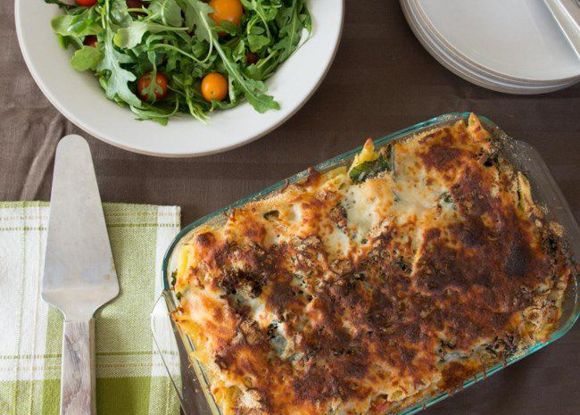

Tuna Garden

This easy to prepare version of the classic tuna casserole contains leafy greens, bell pepper, and penne noodles. You can easily substitute the vegetables with what you have in the refrigerator.
Ingredients
- 8 ounces penne pasta
- 1 tablespoon olive oil
- 1 large onion, chopped
- 2 stalks celery, chopped
- 1 red bell pepper, chopped
Steps
- Preheat oven to 375 degrees F (190 degrees C). Lightly grease a 2 quart casserole dish.
- Bring a large pot of salted water to a boil, add penne pasta, and cook 10 minutes or until al dente; drain.
- Heat the oil in a large wok or skillet over medium-high heat. Mix in onion and cook 5 minutes.
- Transfer wok mixture to a large bowl. Mix in the cooked pasta, soup, vegetable broth, and tuna.
- Pour mixture into the prepared casserole dish. Top with a layer of mozzarella followed by a layer of bread crumbs.